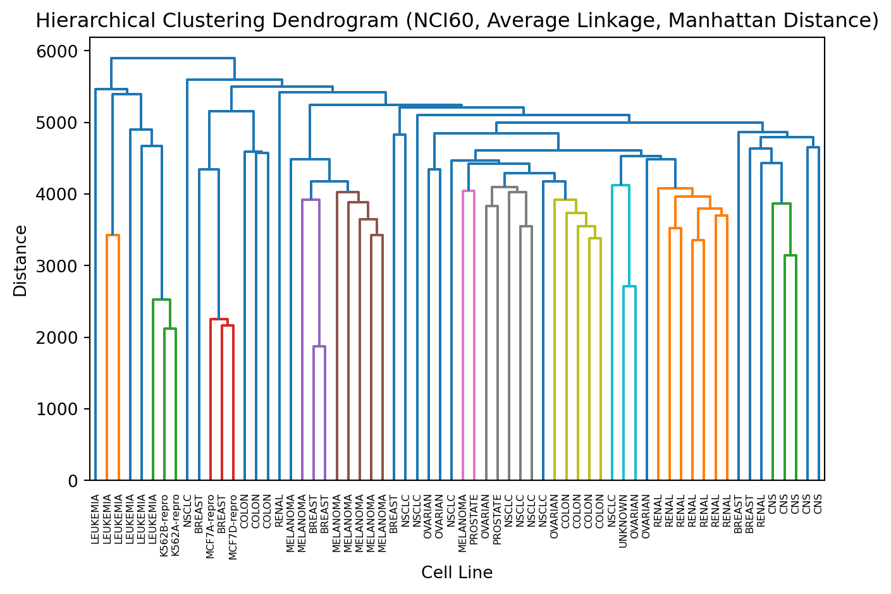

Biological validation: compare clusters to known marker genes, pathways, experimental metadata (batch, donor), or enrichment tests. Often the most important for biologists.
12.2 Quick metrics cheat-sheet (what they tell you)
Explained variance (PCA) — fraction of variance captured by components (useful for dimensionality reduction decisions).
Silhouette score (−1..1) — how well each sample fits its cluster vs nearest other cluster; good general-purpose internal metric.
Stability / reproducibility — how consistent cluster assignments are under parameter changes.
12.3 (Optional) Exercise on cancer data
You have been given some data on cancer cell lines
Team up with someone and perform hierarchical clustering on this data
You have been given some starter code to help you load the data
The data has been downloaded and processed for you (after you run the code below).
The data is in the variable named X
import numpy as npimport pandas as pdimport osimport requestsfrom sklearn.cluster import AgglomerativeClusteringfrom scipy.cluster.hierarchy import dendrogram, linkageimport matplotlib.pyplot as plt# Load dataX = pd.read_csv("https://raw.githubusercontent.com/cambiotraining/ml-unsupervised/refs/heads/main/course_files/data/cancer_data_saved_NC160.csv", index_col=0)print("Fetching labels from GitHub...")labs_url ='https://raw.githubusercontent.com/neelsoumya/python_machine_learning/main/data/NCI60labs.csv'response = requests.get(labs_url)response.raise_for_status()# Read the raw text and split into lines.all_lines = response.text.strip().splitlines()# Skip the first line (the header) to match the data dimensions.labs = all_lines[1:]# The labels in the file are quoted (e.g., "CNS"), so we remove the quotes.labs = [label.strip('"') for label in labs]# Your code below ......
Fetching labels from GitHub...
Write your code while working in pairs or a group
NoteClick to expand
# Hierarchical Clusteringagg = AgglomerativeClustering(linkage='average', metric='manhattan')cluster_labels = agg.fit_predict(X)# Compute linkage matrix for the dendrogramZ = linkage(X, method='average', metric='cityblock')# Plot Dendrogramplt.figure()dendrogram(Z, labels=labs)plt.title('Hierarchical Clustering Dendrogram (NCI60, Average Linkage, Manhattan Distance)')plt.xlabel('Cell Line')plt.ylabel('Distance')plt.xticks(rotation=90)plt.tight_layout()plt.show()

12.3.1 Exercise: try another linkage method and another distance metric
TipImportant Concept (recall)
There is no “correct” answer in unsupervised machine learning!
So how do you know when you are done?
12.4 Evaluating the Quality of Clusters
Evaluating the quality of clusters is a crucial step in any unsupervised learning task. Since we do not have a single correct answer, we use several methods that fall into three main categories:
12.4.1 1. Internal Evaluation
Measures how good the clustering is based only on the data itself (e.g., how dense and well-separated the clusters are).
12.4.2 2. External Evaluation
Measures how well the clustering results align with known, ground-truth labels. This is possible here because the NCI60 dataset has known cancer cell line types, which we loaded as labs.
12.4.3 3. Visual Evaluation
Inspecting plots (like the dendrogram or PCA) to see if the groupings seem logical.
Let us add the two most common metrics: one internal and one external.
12.4.4 Internal Evaluation: Silhouette Score
The Silhouette Score measures how similar an object is to its own cluster (cohesion) compared to other clusters (separation).
Score Range: -1 to +1
Interpretation:
+1: The sample is far away from the neighboring clusters (very good).
0: The sample is on or very close to the decision boundary between two neighboring clusters.
-1: The sample is assigned to the wrong cluster.
12.4.5 External Evaluation: Adjusted Rand Index (ARI)
The Adjusted Rand Index (ARI) measures the similarity between the true labels (labs) and the labels assigned by our clustering algorithm (cluster_labels). It accounts for chance groupings.
Score Range: -1 to +1
Interpretation:
+1: Perfect agreement between true and predicted labels.
0: Random labeling (no correlation).
< 0: Worse than random labeling.
Here is how you would implement this
from sklearn.metrics import silhouette_samples, silhouette_score, adjusted_rand_score # Import evaluation metricsimport numpy as npimport matplotlib.pyplot as plt# Hierarchical Clusteringagg = AgglomerativeClustering(linkage='average', metric='manhattan')cluster_labels = agg.fit_predict(X)# 1. Internal Evaluation: Silhouette Score# Measures how well-separated clusters are based on the data itself.silhouette = silhouette_score(X, cluster_labels, metric='manhattan')print("Silhouette score")print(silhouette)print("Score is from -1 to 1. Higher is better")# 2. External Evaluation: Adjusted Rand Index# Compares our cluster labels to the true cancer type labels.ari = adjusted_rand_score(labs, cluster_labels)print("Adjusted Rand Index")print(ari)print("Compares to true labels. Score is from -1 to 1. Higher is better")
Silhouette score
0.1436950300449066
Score is from -1 to 1. Higher is better
Adjusted Rand Index
0.0554671516253694
Compares to true labels. Score is from -1 to 1. Higher is better
12.4.6 Intuition of silhouette score
Think of each data point as asking two questions:
How close am I to points in my own cluster? (call this a)
How close would I be, on average, to the nearest other cluster? (call this b)
The silhouette value for the point compares those two answers:
If a is much smaller than b (you are much closer to your own cluster than to any other), the silhouette is close to +1 → great fit.
If a ≈ b, silhouette is near 0 → on the boundary between clusters.
If a > b, silhouette is negative → probably misassigned (you are closer to another cluster than your own).
Numerically:
[ s = ]
So
[ s ]
Compare to literature and what others have done
Plain old visual evaluation
compare to labels of what these cell lines are (assuming this is available)
How to interpret (practical heuristics)
Mean silhouette ≳ 0.5 → strong structure (good clustering).
Mean silhouette ≈ 0.25–0.5 → weak to moderate structure; inspect clusters individually.
Mean silhouette ≲ 0.25 → little structure; clustering may be unreliable. (These are rules of thumb — context and domain knowledge matter.)
Also compare to clusterings of other cancer cell lines
Does the cell line also show up in other datasets? (external validation)
12.5 Summary
TipKey Points
We learnt evaluation is difficult in unsupervised machine learning!